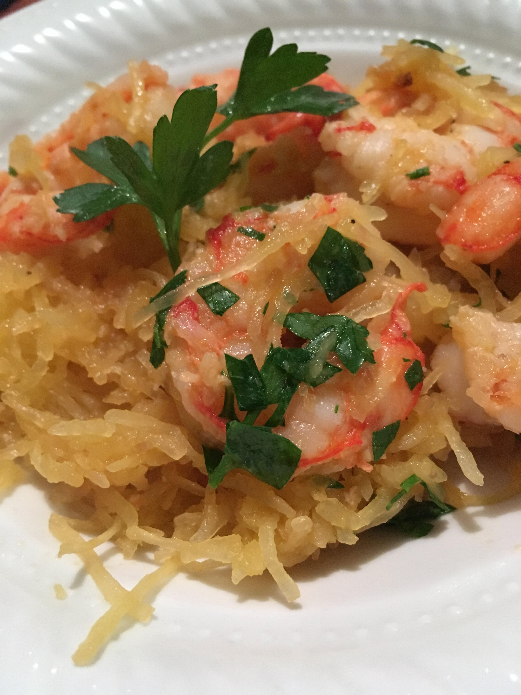

Shrimp Scampi with Spaghetti Squash

Description
A great low-carb, paleo, clean eating recipe for shrimp scampi where noodles are substituted with spaghetti
squash. If you prepare the spaghetti sqash in advance, it is ready in minutes.
Per Serving: 417 calories; protein 26.5g; carbohydrates 16.1g; fat 29.3g; cholesterol 230.1mg; sodium 345.3mg.
Ingredients
- 6 tablespoons olive oil, divided
- 1 small spaghetti squash, halved and seeded
- salt and ground black pepper to taste
- 4 cloves garlic, minced
- 1 pound uncooked medium shrimp, peeled and deveined
- 1 pinch red pepper flakes, or to taste
- 1 lemon, juiced
- ½ lemon, zested
- 2 tablespoons chopped fresh parsley
Steps
- Preheat oven to 350 degrees F (175 degrees C). Grease a baking sheet with 2 tablespoons olive oil. Season
spaghetti squash with salt and pepper and place cut side down on the baking sheet.
- Bake in the preheated oven until easily pierced with a fork, about 40 minutes. Remove from oven and cool
until easily handled. Scrape insides of squash into spaghetti strands with a fork.
- Heat 4 tablespoons olive oil in a large skillet over medium-high heat and cook garlic until fragrant, about
2 minutes. Add shrimp and season with salt, black pepper, and red pepper flakes. Saute shrimp until pink,
tossing often to prevent burning, about 5 minutes. Remove from heat and add spaghetti squash strands. Mix in
lemon juice and zest. Serve sprinkled with parsley.